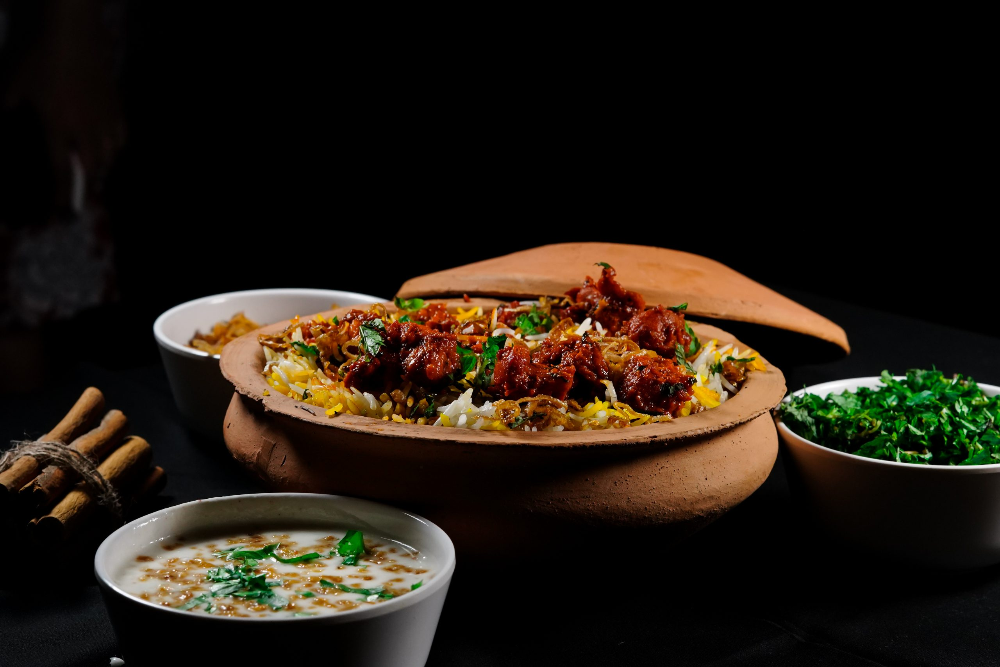

Home
Biryani
Biryani recipe

Description
Chicken biryani is a fragrant and flavorful South Asian rice dish made by layering aromatic basmati rice with tender, spiced chicken. The chicken is typically marinated in yogurt and a blend of spices like turmeric, cumin, coriander, garam masala, and chili powder, then slow-cooked with onions, tomatoes, and fresh herbs such as mint and cilantro. The rice is partially cooked before being combined with the chicken, allowing the flavors to meld together during the final steaming process. Saffron-infused milk or ghee is often drizzled over the layers, giving the dish its signature golden hue and rich aroma.
This dish is cherished for its balance of textures and flavors — the fluffy, separate rice grains contrast beautifully with the juicy, spice-coated chicken pieces. Each bite carries a harmony of warmth from the spices, freshness from the herbs, and richness from the ghee. Chicken biryani is not only a festive centerpiece in many households but also a comfort food enjoyed casually, often accompanied by cooling raita, tangy pickles, or crisp papad. Its appeal lies in how it brings together culinary traditions, aromatic spices, and a sense of celebration in one satisfying, hearty meal.
Ingredients
- For the chicken marinade
- 500–700 g chicken (bone-in or boneless, cut into medium pieces)
- 1 cup plain yogurt (curd)
- 1 tablespoon ginger-garlic paste
- 1 teaspoon turmeric powder
- 1 teaspoon red chili powder
- 1 teaspoon garam masala powder
- 1 teaspoon coriander powder
- Salt to taste
- Juice of half a lemon
- For the rice
- 2 cups basmati rice
- 4 cups water
- 1–2 bay leaves
- 4–5 cloves
- 3–4 green cardamoms
- 1–2 cinnamon sticks
- 1 teaspoon salt
- For the biryani assembly
- 2–3 medium onions (thinly sliced)
- 2–3 tablespoons ghee (clarified butter) or oil
- 2 medium tomatoes (chopped)
- A handful of fresh coriander leaves (chopped)
- A handful of fresh mint leaves (chopped)
- 1/4 cup warm milk with a pinch of saffron strands (optional, for color and aroma)
- Fried onions (optional, for garnish)
Steps
- Marinate the chicken
- In a large bowl, mix:
- 500–700 g chicken pieces
- 1 cup yogurt
- 1 tbsp ginger-garlic paste
- 1 tsp turmeric powder
- 1 tsp red chili powder
- 1 tsp garam masala
- 1 tsp coriander powder
- Salt to taste
- Juice of half a lemon
- Mix well, cover, and let it marinate for at least 30 minutes (2–3 hours for best flavor).
- Prepare the rice
- Wash 2 cups of basmati rice until the water runs clear.
- Soak for 20–30 minutes, then drain.
- In a large pot, boil 4 cups water with:
- 2 bay leaves
- 4–5 cloves
- 3–4 green cardamoms
- 1–2 cinnamon sticks
- 1 tsp salt
- Add the soaked rice and cook until 70% done (the grains should still be a little firm).
- Drain and set aside.
- Cook the chicken
- Heat 2–3 tbsp ghee or oil in a large deep pan.
- Fry 2–3 sliced onions until golden brown (save a small handful for garnish).
- Add 2 chopped tomatoes, cook until soft.
- Add the marinated chicken and cook until the chicken is almost done and coated in thick gravy.
- Add chopped mint and coriander leaves (a handful each).
- Layer the biryani
- In the same pot (or a separate heavy-bottomed one), layer half the chicken, then half the rice.
- Repeat with the remaining chicken and rice.
- Drizzle over:
- 1/4 cup warm milk with saffron strands (optional)
- 1 tbsp ghee
- Top with fried onions.
- Steam (Dum) cooking
- Cover tightly with a lid (seal edges with dough if you want no steam to escape).
- Cook on very low heat for 20–25 minutes.
- Turn off the heat and let it rest for 10 minutes before opening.
- Serve
- Gently fluff the biryani so the layers stay visible.
- Serve hot with raita, salad, or pickle.